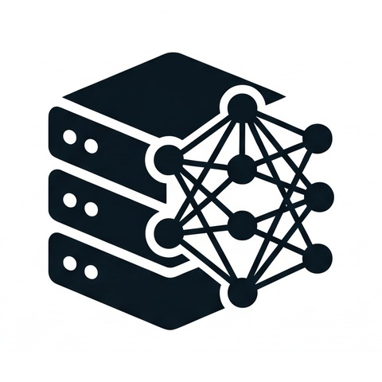

PORTFOLIO JOURNAL
windforsea
A Minimal & Thoughtful Space
Crafted with AI and Code
상단 책갈피는 챕터 바로가기 • 좌우 화살표(← / →)로 세부 페이지 넘기기 📖

A Minimal & Thoughtful Space
Crafted with AI and Code

울산 제조·플랜트 현장에서 체득한 정밀 제어 감각과 게임 QA의 집요한 결함 추적 역량을 소프트웨어 엔지니어링에 접목했습니다. AI 기반 협업을 통해 데이터 전처리, 자동화 파이프라인, 고성능 웹 솔루션을 신속하게 구축하고 완결하는 실용주의 엔지니어입니다.
조회(가드레일 함수)와 변경(사전 검증 CRUD)의 안전한 이원화 파이프라인. 가상 트랜잭션 격리(Copy-on-Write) 및 변경 SQL 큐(migration_queue.py) 기반의 휴먼 인 더 루프(HITL) 최종 승인/롤백 아키텍처 완결.
네이버 IT/과학 뉴스를 Early Break 역순 탐색으로 수집하고, SQLite RDBMS 기반 DB-First 캐싱과 최신 LLM을 결합한 데스크톱 앱. AI 비서 실시간 지시 연동 및 과거 보고서 이력 추적(History Tracking) 완결.
GitHub 레포지토리 →울산 남구 거주자우선주차 데이터 전처리, 동별 통계 분석, 공유주차제 경제성(ROI) 산출 및 인터랙티브 지도 시각화 보고서 완결.
pywebview와 LLM, 기상청 단기예보 Open API를 결합한 실무용 데스크톱 앱. 실시간 예보 타임라인, CSV 테이블 뷰어, AI 챗봇 및 원클릭 기상 통보서(.txt) 자동 작성 완결.
동료 개발자와의 Git Flow 브랜칭 전략, Pull Request(PR) 기반 코드 리뷰, 충돌(Conflict) 해결 및 이슈 트래킹을 체계화한 팀 협업 실습입니다. 기능 브랜치 관리와 소프트웨어 품질 관리(QA) 프로세스를 수립하여 협업 파이프라인을 완결했습니다.
GitHub 협업 레포지토리 →외부 라이브러리(0MB) 없이 순수 코드로 구현한 60fps 파티클 물리 시뮬레이션(인력·소용돌이·충격파) 및 3D 원근 덱 인터페이스. AI 협업으로 기획부터 수학적 최적화까지 완결한 작업물입니다.
스펙터클 체험하기 →외부 라이브러리(0MB) 없이 순수 브라우저 API로 구축한 60fps 탑다운 서바이벌라이크 액션 게임. 11개 독립 모듈 아키텍처, 8비트 사운드 신디사이저, FNV-1a 해시 체크섬 세이브 무결성 보안 및 모바일 터치 조이스틱을 지원하며 Vercel에 라이브 서비스 중입니다.
방문 소감이나 응원의 메시지를 남겨주세요.